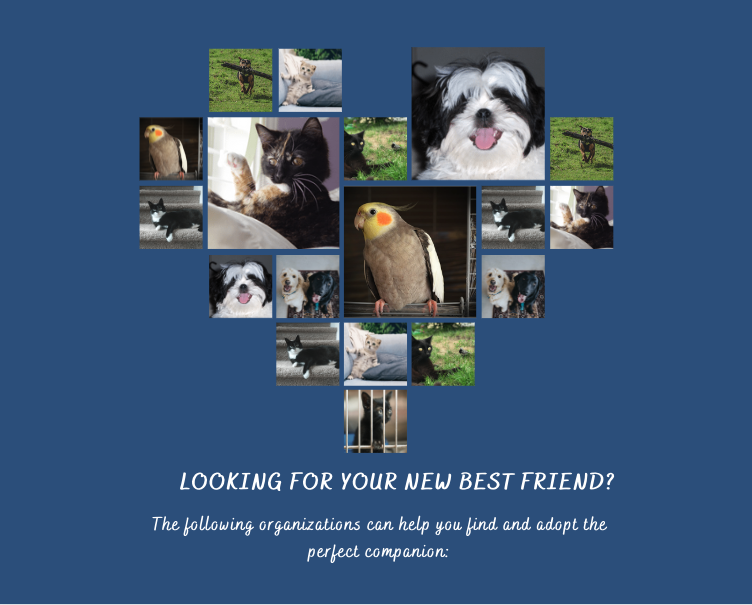

Paradigm Pet Professionals has 12 years of experience working with pet owners, certifications in pet health and nutrition, and customer recognition for outstanding support.
We provide:
Does your pet need help? We are here for you! Complete our contact form and we will reach out to you within 24-48 hours.
At Paradigm Pet Professionals, we believe that pets are a gift from nature to humanity. According to scientific research, opening our homes and hearts to a pet extends our lives and enhances our and our pets' quality of life. Our goal at Pet Paradigm Professionals is to provide you with tools to assist you in taking care of your loved ones who are furry, scaly, feathered, and slimy. For the past twelve years, our "Pexperts," or pet experts, have worked with professionals and pet owners offering both new pet care consultations and new pet consultations.
Looking for some general pet care tips for the most typical breeds of animals? Do you need more guidance choosing the best kind of pet for you and your family? To ensure the long-term health and wellbeing of your new pet, we will collaborate with you and give them individualized evidence-based pet care.
We are also delighted to guide you through the adoption procedure! We will walk you through every step of the process, from choosing the breed of pet that is most suitable for your household and lifestyle to filling out the necessary paperwork, to bringing your new family member home. To make a consultation request, kindly complete our contact form. Within 48 hours, we'll get in touch with you to arrange a consultation. Every field is necessary.